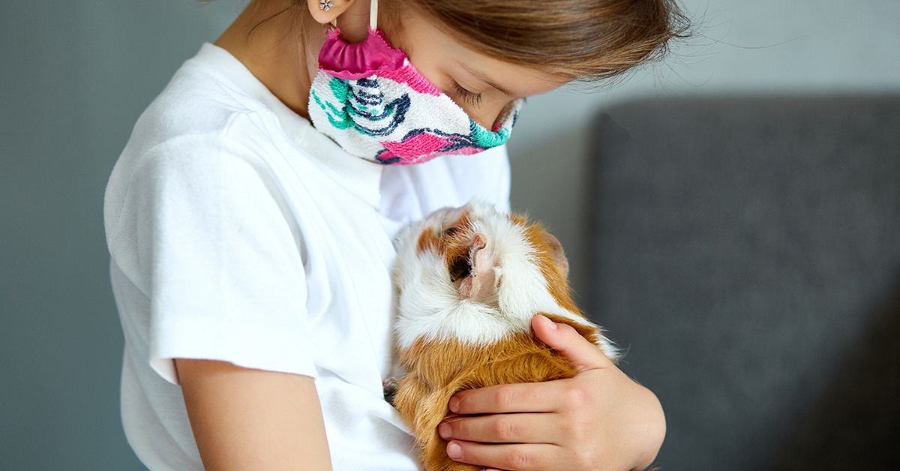
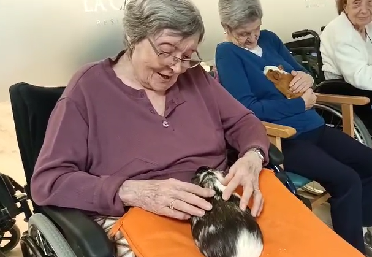

Qué ofrecemos
¿Qué ofrecemos con nuestra terapia asistida con cobayas?
1. Terapia emocional asistida con cobayas
Sesiones individuales o en pequeños grupos donde se trabaja regulación emocional, reducción del estrés, motivación, habilidades sociales y autoestima.
2. Programas para adultos mayores
Intervenciones orientadas a la estimulación cognitiva, la conexión afectiva, la reducción de la soledad y el acompañamiento emocional.
3. Terapia infantil
Actividades lúdicas que fomentan la expresión emocional, la empatía, la atención y el desarrollo socioemocional.
4. Sesiones a domicilio
Trasladamos las cobayas y el material terapéutico al hogar del paciente, facilitando el acceso a quienes tienen dificultades de movilidad.
5. Talleres y actividades grupales
Talleres de convivencia con animales, jornadas de relajación y actividades educativas para escuelas y familias.
6. Acompañamiento psicoeducativo
Orientado a cuidadores, familias y centros que desean integrar estrategias de bienestar emocional y trato respetuoso hacia los animales.

